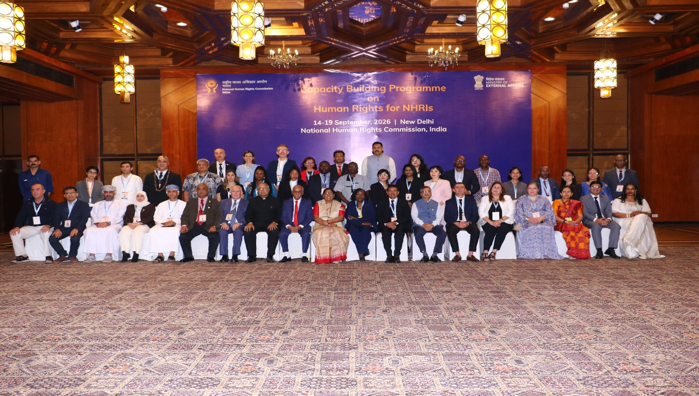
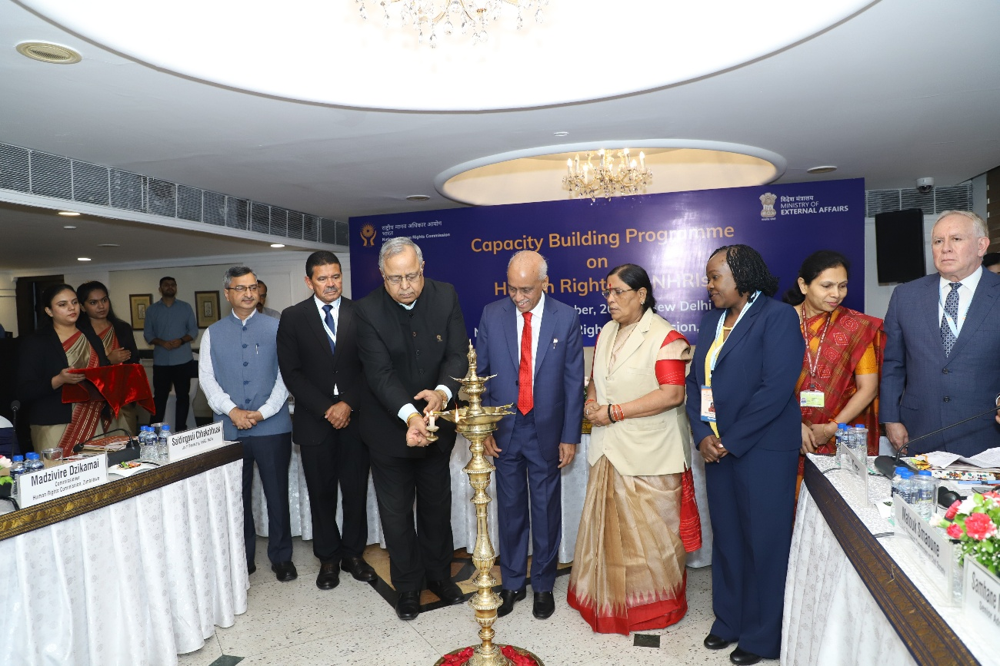
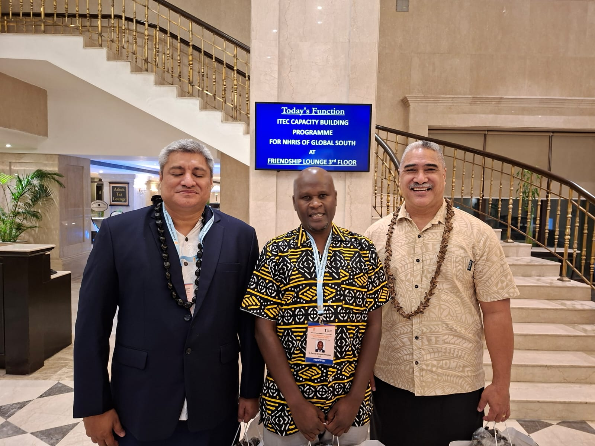
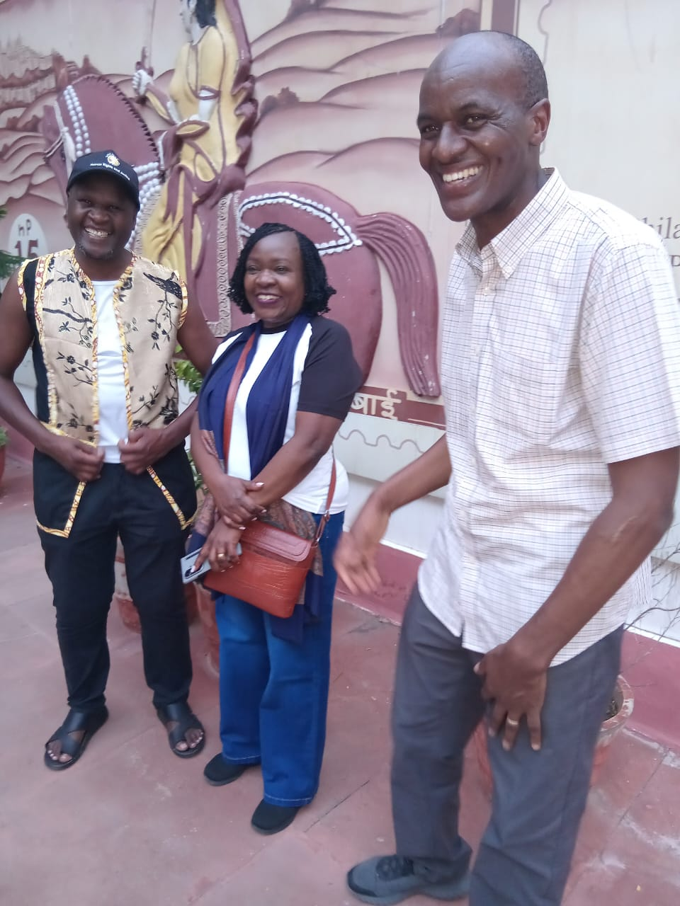

KNCHR Joins Global South NHRIs for Human-Rights Capacity Building in New Delhi

The Kenya National Commission on Human Rights (KNCHR) joined National Human Rights Institutions (NHRIs) from across the Global South for the Capacity Building and Experience-Sharing Conference on Human Rights, held from 14th to 19th September 2026 at the Hotel Ashok in New Delhi, India.
The programme is convened by the National Human Rights Commission of India (NHRC-India) in collaboration with the Ministry of External Affairs, through the Indian Technical and Economic Cooperation (ITEC) programme and the High Commission of India in Nairobi. Designed for senior-level functionaries of NHRIs, it first ran in 2023 and has continued each year since — the September 2026 edition, in which KNCHR participated, was the fifth.
A gathering of the Global South
Delegates were drawn from human-rights and ombudsman institutions across the Global South, namely:
- NHRC-India and the Kenya National Commission on Human Rights
- The South African, Zimbabwean, Ethiopian and Malaysian Human Rights Commissions
- The National Human Rights Council of Algeria and the Indonesian Human Rights Commission
- The National Institute of Human Rights of Chile and the National Ombudsman of Ecuador
- The Kazakhstan NHRI, the Kyrgyzstan Ombudsman, the Oman Human Rights Commission, the Tajikistan Commission for Human Rights, and the Samoa Ombudsman & Human Rights Institution

Objectives
The programme set out to strengthen the capacities of participating officers, share experiences and good practices, and foster cooperation towards the promotion and protection of human rights in their respective countries — providing a unique platform for deliberation on contemporary human-rights issues and the exchange of benchmarks that can be applied in KNCHR's own work.
The programme sessions
Delivered through expert presentations, plenary discussions and experience-sharing, the thematic areas included:
- Human rights challenges in a changing world order
- The convergence of the human-rights framework and the Sustainable Development Goals
- Countering human trafficking in the digital era
- Investigations, spot inquiries and analysis of reports
- A child-centric approach to the human rights of future citizens
- Research, training, outreach and advocacy
- A human-rights perspective to life behind bars, and mental health and human rights
- From welfare to rights: changing perspectives on disability
- From donation to dignity: making the poor wealth creators and owners
- Country presentations by all participating NHRIs
KNCHR's contribution
KNCHR was represented by two Board members and a technical officer, who shared the Commission's experience and approaches across the scope of its mandate. In its country presentation on Strengths, Best Practices and Challenges, KNCHR highlighted its constitutional independence and broad legal mandate — including powers of investigation, alternative dispute resolution, and adjudication on human-rights matters — as well as its special roles as the independent monitoring mechanism under the UN Convention on the Rights of Persons with Disabilities and as a national preventive mechanism against torture.

The Commission shared several of its best practices, including:
- Constructive engagement balanced with accountability — maintaining dialogue with government, Parliament, the Judiciary, security agencies and civil society while retaining the independence to question actions that undermine rights.
- Participatory, victim-centred approaches — ensuring affected communities and victims are participants, not merely recipients; the Reparations Framework illustrates this.
- Engagement with international mechanisms — including recognition to monitor implementation of the ICCPR and other treaty obligations.
- Strategic partnerships, preventive protection, and linking human rights to constitutional governance.
It was candid, too, about the challenges the Commission faces — inadequate and unpredictable financing; gaps in translating rights and court decisions into effective remedies; the delicate balancing of individual rights and public safety; a limited mandate on redress (unlike NHRC-India, KNCHR cannot order compensation); emerging risks from digital technology, AI, surveillance and climate change; witness, victim and staff protection; and a volatile political environment.
Lessons learnt
- KNCHR can benchmark with the South African Human Rights Commission and NHRC-India to strengthen its investigations and redress mandate.
- Strategic collaboration with key government agencies — without compromising independence — can yield better protection outcomes.
- Without powers to make and enforce orders, an NHRI struggles to translate findings into real protection.
- NHRIs have a significant role in bringing actors together to realise the Sustainable Development Goals.
Recommendations
- Secure resources to ensure continuity of the programme, with tools to assess implementation of past resolutions.
- Establish a Global South NHRI network to share information, experiences and benchmarks.
- Benchmark enforcement mechanisms with NHRIs that have them, such as the SAHRC and NHRC-India.
- Proactively develop preventive mechanisms while ensuring findings translate into tangible results.
- Strengthen strategic partnerships — with the Judiciary, ODPP, the Office of the Attorney General, the National Police Service, Parliament and the Treasury.

The forum reaffirmed the value of South–South cooperation among national human-rights institutions — and the benchmarks KNCHR carries home as it continues to strengthen the promotion and protection of human rights in Kenya.